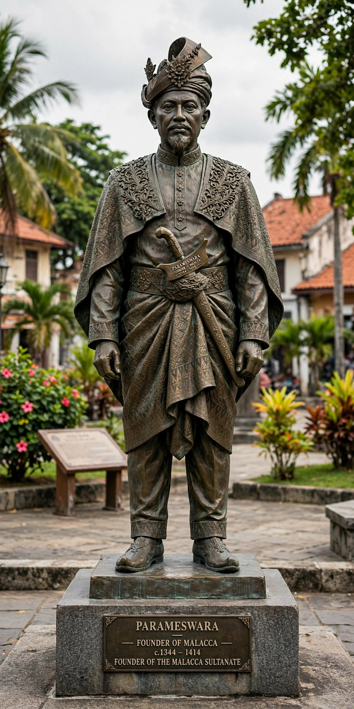

Parameswara of Malacca
| Parameswara | |
|---|---|
| Ruler of Singapore | c. 1389–1398 |
| Founder / 1st Ruler of Malacca | c. 1400–1414 |
| Died | c. 1414, Malacca |
| Successor | Megat Iskandar Shah |

Parameswara (1344 – c. 1414), also known as Iskandar Shah in some accounts, was a Palembang prince and the last king of Singapura (Singapore) who founded the port kingdom of Malacca around 1400. His establishment of Malacca on the west coast of the Malay Peninsula laid the foundations of the Malacca Sultanate, one of the great trading empires of maritime Southeast Asia.
Origins and Singapore
According to the Malay Annals (Sejarah Melayu) and Portuguese accounts, Parameswara was a prince from Palembang in Sumatra, a former centre of the Srivijaya empire, who fled Majapahit or Siamese pressure and took control of Temasek (Singapore) in the late 1380s, killing or displacing its Siamese-appointed chief. After several years, an attack — attributed either to Majapahit from Java or to the Siamese kingdom of Ayutthaya — drove him from the island around 1398.
Founding of Malacca
Fleeing north along the Malay coast, Parameswara stayed briefly at Muar before settling at the mouth of the Bertam River around 1400. Legend relates that while resting under a Malacca tree (pokok melaka), he saw a mouse deer kick one of his hunting dogs into the river; taking the boldness of the small animal as a good omen, he resolved to found a settlement there and named it Melaka. The site's deep, sheltered harbour on the straits between Sumatra and Malaya made it an ideal entrepôt where traders from India, China, Arabia and the archipelago could meet with the monsoon winds.
Relations with China
Parameswara cultivated relations with Ming China. In 1403 a Chinese envoy, Yin Qing, arrived, and Parameswara sent tribute missions to the Yongle Emperor, who recognised him as king of Malacca in 1405. The treasure fleets of the admiral Zheng He visited Malacca repeatedly, and Chinese protection helped deter Siamese and Javanese ambitions. Trade flourished, and Malacca grew rapidly into a cosmopolitan port.
Death and legacy
Parameswara died around 1413–1414 and was succeeded by his son Megat Iskandar Shah. Whether Parameswara himself converted to Islam and took the name Iskandar Shah, or whether the conversion belongs to his successor's reign, is debated among historians; the Malay Annals and Portuguese sources differ. What is not disputed is that his foundation became, under his descendants, the Malacca Sultanate — the archetypal Malay Muslim trading state whose language, court culture and laws shaped the region for centuries.
See also
Malacca Sultanate · Malacca · Zheng He · Srivijaya · Afonso de Albuquerque